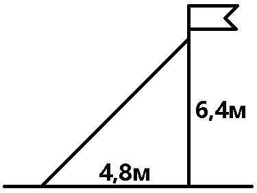
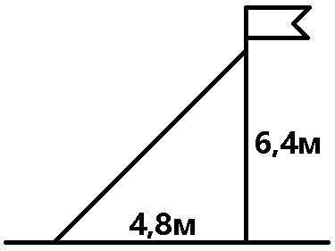
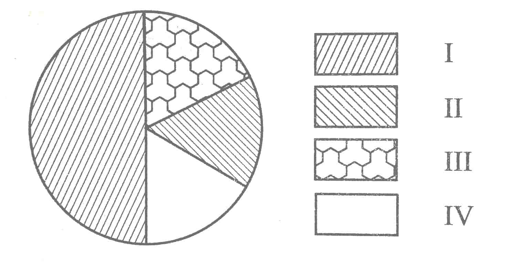
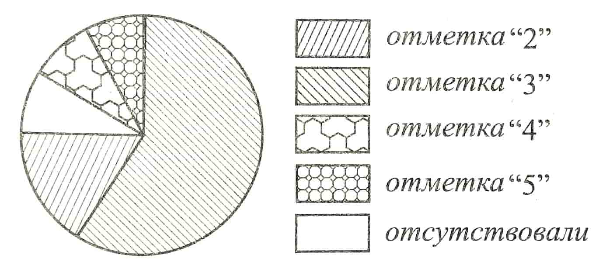

Тренажёр по реальной математике
1. В таблице приведены расстояния от Солнца до четырёх планет Солнечной системы. Какая из этих планет дальше всех от Солнца?
| Планета | Сатурн | Венера | Марс | Нептун |
|---|---|---|---|---|
| Расстояние (в км) | \(1,427 * 10^9\) | \(1,082 * 10^8\) | \(2,279 * 10^8\) | \(4,497 * 10^9\) |
\(1)\) Сатурн
\(2)\) Марс
\(3)\) Венера
\(4)\) Нептун
Ответ:
2. Магазин делает скидки для пенсионеров на определённое количество процентов от стоимости покупки. Пакет молока стоит в магазине \(\,60\,\) рублей, а пенсионер заплатил за него \(\,54\,\) рубля. Сколько процентов составляет скидка для этого пенсионера?
Ответ:
3. Точка крепления троса, удерживающего флагшток в вертикальном
положении, находится на высоте \(\,6,4\) м от земли. Расстояние от
основания флагштока до места крепления троса на земле ровно
\(4,8\) м. Найдите длину троса (в метрах). 
положении, находится на высоте \(\,6,4\) м от земли. Расстояние от
основания флагштока до места крепления троса на земле ровно
\(4,8\) м. Найдите длину троса (в метрах). 
Ответ:
4. На диаграмме показано распределение количества собранного урожая зерновых по сельским хозяйствам района. Всего было собрано \(\,4500\,\) тонн.

Какие из следующих утверждений верны?
\(1)\) Количество урожая, собранного \(\,\mathrm{II}\,\) хозяйством больше, чем количество урожая, собранного \(\,\mathrm{I}\,\) хозяйством.
\(2)\) Одна четвёртая часть от общего количества урожая составляет урожай, собранный \(\,\mathrm{II}\,\) хозяйством.
\(3)\) Количество урожая, собранного \(\,\mathrm{IV}\,\) хозяйством, меньше, чем собранного \(\,\mathrm{I}\,\) хозяйством.
\(4)\) Количество урожая, собранного \(\,\mathrm{II}\,\) хозяйством, больше \(\,1000\,\) тонн.
Ответ:
5. В каждой двадцать пятой банке с леденцами, согласно условиям акции, есть приз. Призы распределены по банкам случайно. Таня покупает банку с леденцами в надежде выиграть приз. Найдите вероятность того, что Таня не найдёт приз в своей банке.
Ответ:
6. В таблице приведены размеры штрафов за превышение максимальной разрешённой скорости, зафиксированной с помощью средств автоматической фиксации, установленных на территории РФ с 1 сентября 2013 года.
| Превышение скорости (км/ч) | \(21 - 40\) | \(41 - 60\) | \(61 - 80\) | \(81\,\) и более |
|---|---|---|---|---|
| Размер штрафа (руб.) | \(500\) | \(1000\) | \(2000\) | \(5000\) |
Какой штраф должен заплатить владелец автомобиля, зафиксированная скорость которого составила \(\,109\,\) км/ч на участке дороги с максимальной разрешённой скоростью \(\,40\,\) км/ч?
\(1)\, 500\) рублей
\(2)\, 1000\) рублей
\(3)\, 2000\) рублей
\(4)\, 5000\) рублей
Ответ:
7. В таблице приведена стоимость работ по покраске стен.
| Цвет стен | Цена в рублях за \(\,1\,\) м\(^2\) (в зависимости от площади помещения) | |||
|---|---|---|---|---|
| до \(20\) м\(^2\) | от \(21\) до \(30\) м\(^2\) | от \(31\) до \(50\) м\(^2\) | свыше \(50\) м\(^2\) | |
| белый | \(100\) | \(90\) | \(80\) | \(50\) |
| цветной | \(130\) | \(110\) | \(90\) | \(60\) |
Пользуясь данными, представленными в таблице, найдите, сколько рублей нужно заплатить за покраску помещения, если площадь стен \(\,35\) м\(^2,\) стены белые и действует сезонная скидка в \(10\%.\)
Ответ:
8. Пожарную лестницу длиной \(\,12,5\) м приставили к окну четвёртого этажа дома. Нижний конец лестницы отстоит от стены на \(\,3,5\) м. На какой высоте расположено окно? Ответ дайте в метрах.
Ответ:
9. На диаграмме представлены итоги контрольного диктанта по русскому языку в 9-х классах.

Какие из утверждений относительно контрольного диктанта верны, если всего в школе \(\,100\,\) девятиклассников?
\(1)\) Больше половины девятиклассников получили отметку \(\,«3».\)
\(2)\) Около четверти девятиклассников отсутствовали на контрольном диктанте.
\(3)\) Отметку \(\,«4»\,\) и \(\,«5»\,\) получила примерно половина девятиклассников.
\(4)\) Отметку \(\,«3»,\) \(\,«4»\,\) и \(\,«5»\,\) получили более \(\,90\,\) учащихся.
Ответ:
10. В таблице представлены результаты четырёх стрелков, показанные ими на тренировке.
| Номер стрелка | Число выстрелов | Число попаданий |
|---|---|---|
| \(1\) | \(100\) | \(28\) |
| \(2\) | \(80\) | \(22\) |
| \(3\) | \(75\) | \(27\) |
| \(4\) | \(60\) | \(18\) |
Тренер решил послать на соревнования того стрелка, у которого относительная частота попаданий выше. Кого из стрелков выберет тренер? Укажите в ответе его номер.
Ответ: